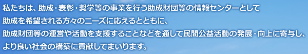
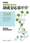
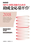

- 2018/07/27
- 9月定例研修会スケジュール（9月5日、12日、26日）→ 詳細・申し込み
- 2018/07/17
- 「ステップアップ研修交流会」（8月29日午後開催）→ 詳細・申し込み
- 2018/06/15
- 「研究推進／支援担当者のための研修交流会」（8月1日午後開催）→
詳細・申し込み定員に達しました - 2018/05/25
- 7月定例研修会スケジュール（7月4日、18日、25日）→ 詳細・申し込み
- 2018/06/01
- 「平成30年度 初任者研修会（管理職向け）」（7月10日）→ 詳細・申し込み
- 2018/05/09
- 助成財団「深掘り」セミナー「「やればわかる」で歩んだ25年−ヤマト福祉財団」開催(6月29日)→詳細・申し込み

-
助成金情報（データ検索）
約1,300件収録の助成財団データベースと、約7,000件／年収録の採択課題データベース
-
助成金募集ニュース（2018年7月）
今月募集開始の助成情報です。
-
助成関連ニュース（2018年7月）
当センターの会員財団からのお知らせ（助成決定、イベント等情報）を掲載しています。
-
助成財団リンク集
ホームページを有する助成財団へリンクします。
-
財団設立・運営情報、相談
新公益法人制度における公益移行、財団設立の情報、業務ノウハウ、Q＆Aなど。
-
研修会・部会情報
当センター主催の助成財団を対象に、研修や財団相互の勉強会（部会）についての情報。

-
助成財団フォーラム
毎年行う助成財団を対象に時宜に合うテーマでの講演、シンポジウム等を通じての啓発、交流。
日本の助成財団の現状
助成財団の資産規模、事業分野などの毎年の基本統計。
NEW 助成団体要覧2018－民間助成金ガイド
2018年3月10日発行！
1,444団体の事業概要を掲載
B5判
定価12,000円+税（送料別）
NEW 助成財団 研究者のための
助成金応募ガイド2018

2018年3月27日発行！
公募プログラム1,368を抽出
定価2,500円+税（送料別）
NEW 助成財団 NPO・市民活動のための助成金応募ガイド2018

2018年3月30日発行！
公募プログラム927を抽出
定価2,315円+税（送料別）